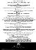
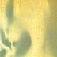
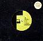
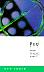

|  |
FAC 151
|
Additional Notes:
The festival at G-Mex, celebrating 10 years of Punk, organised by Factory.
A PSA exhibition at the City Art Gallery, a clothes show at the Hacienda, a Kevin Cummings photo exhibition, a music seminar, an exhibition of stuff by Malcolm Garrett and Assorted Images, some film & video shows, and gigs.
The show at the Greater Manchester Exhibition Centre on July 19 was the 10th and last event, featuring A Certain Ratio, The Smiths, New Order, The Fall, Cabaret Voltaire, Pete Shelley, The Worst, and Wayne Fontana.
Factory produced much merchandise for the festival, including a badge displaying the '10' logo and 'FAC 151' on it (the only item with the number), T-shirts, a boiler suit, a set of 10 posters, a set of 10 postcards, a set of Kevin Cumming postcards, a booklet with pieces by Cath Carroll, Linder, Richard Boone, Tony Wilson, Paul Morley, and others, and numerous other posters.
FAC 152
|
Additional Notes:
Produced for a New Order benefit gig in Liverpool, February 8, 1986, in aid of the Militant Tendency.
|  |
FAC 153
|
Contents:
7": UK 1986 (Factory FAC 153)
3:28 State of the Nation (edit)
3:33 Shame of the Nation (edit)
12": UK 1986 (Factory FAC 153)
6:32 State of the Nation
7:54 Shame of the Nation
~ Hail Mary
~ Lucky Johnny
FACD 154
|
Contents:
CD: UK 1986 (Factory FACD 154) 2:46 Pauline 4:03 Tomorrow 5:37 Dance II 3:13 Hilary 4:01 Street Fight 4:18 Royal Infirmary 8:36 Black Horses 4:58 Dance I 10:17 Blind Elevator Girl (Osaka)
FACT 155
|
Contents:
LP: UK 1986 (Factory FACT 155) 5:19 Mystic Rhymes 4:09 After Hours 3:09 Green Dolphin Street 6:36 Black Water 1:03 In Time 7:45 Father Pants 4:25 Start the Melody 3:36 Token Freaky 4:13 Love Suspended in Time
FAC 156
|
Additional Notes:
A 12" that was never released, because the band had split (with bad blood?).
FAC 157
|
Contents:
12": UK 1987 (Factory FAC 157) 4:56 Bad News Week 7:39 Bad News Week 2 (Cough Mix)
FAC 158
|
Contents:
7": UK 1986 (Factory FAC 158/7) 3:58 Summer (Arthur Baker Remix) 3:30 The Hunter Gets Captured by the Game 12": UK 1986 (Factory FAC 158) * 6:00 Summer (Arthur Baker Remix) 5:50 Summer (Arthur Baker Instrumental) ~ Anna Domino "Summer" ~ Anna Domino "Dub Version" * The labels on the 12" are wrong and list tracks and timings of the 7".
|
|
FAC 159
|
Additional Notes:
(a) Written by Tim Difford whilst working for Factory for 6 months as part of his degree course. Apparently he owns the copyright.
(b) It also seems that John Sykes Fletcher had a role in writing for Fac Facts, although he states that he never finished it.
Sent out to retailers and distributors.
Included short band bio's and discographies. Later-on 'Fac Facts' became a bi-monthly news bulletin for press, distributors and licensees.
FACT 160
|
Contents:
LP: UK 1987 (Factory FACT 160) 6:35 Sweet Forgiveness 5:58 Conquer Me 4:23 Sprinkling Petals into Hell 3:16 The Last Man in Europe 5:24 Bad News Week 2:29 Tim Lick My Knees 4:42 Shit Creek No Paddle 5:05 Warhead 3:40 Carcrash ~ More Love than Hate ~ Eatshitfuckface
Additional Notes:
Album originally titled 'Sprinkling Petals Into Hell', but changed at last minute.
FAC 161
|
Additional Notes:
Refers to a deal with London based agency 'Out Promotion' [sic] ran by Nicki Kefalas. The deal was signed in 1986 when Factory decided to do regular promotion for their releases and acts.
FAC 162
|
Contents:
7": UK 1986 (Factory FAC 162) 3:12 A Gentle Sound 3:45 Content 12": UK 1986 (Factory FAC 162) 3:12 A Gentle Sound 3:45 Content 2:40 Darkness and Colour
FAC 163
|
Contents:
7": UK 1986 (Factory FAC 163) 3:40 Bizarre Love Triangle (edit) 3:23 Bizarre Dub Triangle (edit) 12": UK 1986 (Factory FAC 163) 6:39 Bizarre Love Triangle 7:06 Bizarre Dub Triangle
FACT 164
|
Contents:
2xLP: US 1986 (Factory/Relativity FACT 164/88561-8123-1) * 2xLP: AU 1986 (Factory Australia/CBS FACT 164) * 2xCS: UK 1986 (Factory FACT 164C) [boxed] * CD: UK 1986 (Factory FACD 164) [LP One] 2:58 Sketch for Summer 5:00 Conduct 2:22 Sketch for Winter 3:45 Lips That Would Kiss 5:21 For Belgian Friends 3:36 Danny 3:35 Piece of Out of Tune Grand Piano */** 6:46 Never Known 2:14 Jacqueline 6:32 The Missing Boy [LP Two] 3:21 Prayer 4:09 Spent Time 6:44 Without Mercy (Stanzas 4 to 7) 7:04 Without Mercy (Stanzas 10 to 12) 5:58 The Room 10:17 Blind Elevator Girl * 4:02 Tomorrow 6:21 L.F.O. M.O.D. * ** Excerpt from FBN 10.
Additional Notes:
FACT 165
|
Contents:
LP: UK 1986 (Factory FACT 165) CD: UK 1986 (Factory FACD 165) 4:03 Rythm * 3:51 Drunk 4:15 Koo Koo 4:43 My Man 6:06 Caught 4:24 Summer 3:30 The Hunter Gets Captured by the Game 4:15 Chosen Ones 4:42 Not Right Now 4:02 Take That ?:?? Sixteen Tons ?:?? Half of Myself * Mis-spelled on purpose.
|  |
FAC 166
|
Contents:
7": AU 1987 (Factory Australia/CBS FAC 1667)
3:35 Bootsy
4:27 Inside
12": AU 1987 (Factory Australia/CBS FAC 16612)
6:41 Bootsy (Remix) *
4:50 Mickey Way
* Remixed by Robert Racic.
Additional Notes:
Australian-only release, FACT 166 appears below.

|
FACT 166
|
Contents:
LP: UK 1986 (Factory FACT 166) *
CD: UK 1986 (Factory FACD 166) **
CS: UK 1986 (Factory FACT 166C) [boxed] ***
[North] *
3:40 Only Together
4:38 Bootsy
5:13 Fever 103
4:57 Naked and White
[South] *
4:50 Mickey Way
3:59 And Then She Smiles
5:00 Take Me Down
4:53 Anthem
7:10 Si Fermir O Grido **
4:27 Inside **/***
4:53 Nostromo A Go-Go **/***
~ The Way We Split Our Genes
~ The Way We Split Our World
*** With insert.
Additional Notes:
Initial copies of FACT 166 in Australia came with FACT 135.
FAC 167
|
Contents:
7": UK 1987 (Factory FAC 167) 4:00 Brighter 3:20 History Burns 12": UK 1987 (Factory FAC 167) 4:50 Brighter 3:20 History Burns 4:02 Carefull ~ Alright Dad
FAC 168
|
Contents:
12": UK 1986 (Factory FAC 168)
[North]
5:54 Mickey Way (The Candy Bar)
[South]
4:27 Inside
7:10 Si Firmi O Grido
FAC 169
|
Contents:
7": UK 1987 (Factory FAC 169) [white label promo] 3:20 So Good (Edit) 3:20 So Good (Edit) 12": UK 1987 (Factory FAC 169) [white label promo] * 12": UK 1987 (Factory FAC 169) 5:25 So Good 4:00 So Bad 3:20 So Good (Airwave Mix) * Included as part of 4x12" white label promo set to promote Salvation (!).
Additional Notes:
FACT 170
|
Contents:
LP: UK 1987 (Factory FACT 170) [first pressing] *
LP: UK 1988 (Factory FACT 170) [later pressings] **
CS: UK 1987 (Factory FACT 170C) [boxed] ***
CD: UK 1987 (Factory FACD 170) **
3:06 Kuff Dam
4:25 Tart Tart
2:22 'Enery
4:53 Russell
2:36 Olive Oil
2:22 Weekend S
3:42 Little Matchstick Owen
3:45 Oasis
3:17 Desmond *
4:40 24 Hour Party People **
4:20 Cob 20
4:15 Little Matchstick Owen's Rap ***
~ Do It Faster
~ Do It Again
* 'Desmond' had to be removed due to royalty problems. They stole a
melody and a line from a Beatles song.
*** Labelled as track 11 on the sleeve and on the CD itself of the FACD
format. The track, however, is not included on this CD nor on the LP.
With insert.
Additional Notes:
The first pressing of the LP had no title written of the cardboard sleeve itself, but rather on an outer clear plastic sleeve.
FAC 171
|
Additional Notes:
The US release of FACT 150 was celebrated with the unveiling of a video/sculpture installation 'Compact' designed by Saville, at White Column's art gallery in NY. The event took place 30 September - 4 October 1986 at 325 Spring Street, NYC 10012.
A poster and special invitation card for the event exist with the number on them.
FAC 172
|
Additional Notes:
This could refer to the remixed version of FACT 185 that was released by Virgin America in November 1987.
FAC 173
|
Contents:
VHS: UK 1986 (Factory FAC 173) [promo] ?:?? Bizarre Love Triangle
Additional Notes:
Video shot by Robert Longo.
Also available on FACT 225.
FAC 174
|
Additional Notes:
Press pack for US release of FACT 164, consisting of DC press clippings (in English, Spanish, Portugese and Swedish!) and a sticker with a band bio and US tour dates.
FAC 175
|
Contents:
CS: UK 1986 (Factory FAC 175) ?:?? THICK PIGEON - Blue Christmas * * Written by Bill Hayes & Jay Johnson, 1948 RCA. Published by Bibo Music.
Additional Notes:
This gift took the form of a 7" x 7" box including an 'origami' Factory logo and a cassette as described above.
FAC 176
|
Contents:
12": UK 1987 (Factory FAC 176) 4:18 Tart Tart 4:15 Little Matchstick Owen's Rap ~ And Again
|  |
FACT 177
|
Contents:
VHS: UK 1986 (Factory FACT 177)
BETA: UK 1986 (Factory FACT 177)
2:00 {Opening titles, backstage visuals}
5:00 Confusion
4:20 Love Vigilantes
4:30 We All Stand
4:55 As It Is When It Was
4:40 Sub-culture
5:23 Face Up
5:30 Sunrise
4:50 This Time of Night
8:09 Blue Monday
0:45 {End titles}
Additional Notes:
Recorded at the Shinjuku Kosei Nenkin Hall, Tokyo, Japan, 5/2/85.
FAC 176
|
Contents:
7": UK 1987 (Factory FAC 178) [one-sided white label promo] 4:25 Pale Spectre (Edit) 12": UK 1987 (Factory FAC 178) 3:26 Gruesome Castle 4:09 Pale Spectre 3:58 Furious Sea 3:57 Plastic Flowers
FAC 179
|
Contents:
7": UK 1987 (Factory FAC 179-7) 3:25 When It All Comes Down 3:40 Did She ~ Bless You 12": UK 1987 (Factory FAC 179) 7:17 When It All Comes Down (Catechism) 3:40 Did She 3:25 When It All Comes Down
FACT 180
|
Contents:
VHS: UK 1987 (Factory FACT 180) ?:?? RAILWAY CHILDREN - Brighter ?:?? NEW ORDER - Bizarre Love Trinagle ?:?? MIAOW - When It All Comes Down ?:?? DURUTTI COLUMN - The Missing Boy ?:?? JOY DIVISION - Love Will Tear Us Apart ?:?? RAILWAY CHILDREN - Brighter ?:?? NEW ORDER - Bizarre Love Triangle ?:?? MIAOW - When It All Comes Down ?:?? KALIMA - Trickery ?:?? NEW ORDER - Shellshock ?:?? HAPPY MONDAYS - Tart Tart ?:?? RAILWAY CHILDREN - Brighter ?:?? NEW ORDER - Bizarre Love Triangle ?:?? MIAOW - When It All Comes Down ?:?? WILLIAM S. BURROUGHS - Towers Open Fire
FACT 181
|
Additional Notes:
A youth exploitation movie, with a budget of $2,500,000.
Production started July 1987 and aborted in 1992. Tony Wilson even went to Hollywood (see FAC 221) to raise money for the film.
FACT 182
|
Contents:
7": AU 1987 (Factory FAC 182-7)
4:22 JUMPIN' JESUS - You Can't Blackmail Jesus
3:20 DOMINIQUE - Play The Beat
12": UK 1987 (Factory FAC 182-12)
12": UK 1987 (Factory FAC 182) [white label promo] *
6:03 THE HOOD - Salvation! Have You Said Your Prayers Today?
4:22 JUMPIN' JESUS - You Can't Blackmail Jesus
12:05 THE HOOD - Salvation (Nitromix)
LP: AU 1987 (Factory Australia/CBS FACT 182) **
2:12 NEW ORDER - Salvation Theme
4:22 JUMPIN' JESUS - You Can't Blackmail Jesus
4:13 CABARET VOLTAIRE - Twanky Party
4:59 NEW ORDER - Touched by the Hand of God ***
3:20 DOMINIQUE - Play the Beat
1:50 THE HOOD - Nightmare
3:42 NEW ORDER - Let's Go
4:08 THE HOOD - Salvation! Have You Said Your Prayers Today
1:42 ARTHUR BAKER - Come On
2:28 NEW ORDER - Sputnik
3:58 CABARET VOLTAIRE - Jesus Saves
2:49 NEW ORDER - Skullcrusher
3:30 DOMINIQUE - Destroy All Evil
* Included as part of 4x12" white label promo set to promote
Salvation (!).
** Released in Australia as FACT 182.
*** Early version (Original Mix).
Additional Notes:
FAC 183
|
Contents:
7": UK 1987 (Factory FAC 183-7) 4:02 True Faith 5:32 1963 12": UK 1987 (Factory FAC 183) 5:55 True Faith 5:32 1963 12": UK 1987 (Factory FAC 183R) 8:59 True Faith Remix 5:32 1963 10:41 True Dub 12": AU 1987 (Factory FAC 183R) 8:59 True Faith Remix ?:?? Paradise Remix 10:41 True Dub CDV: UK 1989 (Factory FACDV 183) [PAL] 9:02 True Faith (Remix 12 inch) 3:43 Evil Dust 4:06 True Faith (7 inch) ?:?? True Faith (Video)
Additional Notes:
FAC 183 also allocated to promo video as seen on FACT 225.
FAC 184
|
Contents:
12": UK 1987 (Factory FAC 184) 4:13 Our Lady of the Angels 4:11 White Rabbit * 8:40 Catos con Guantes ~ For A Lady ~ Amigos * With Debi Diamond.
FACT 185
|
Contents:
LP: UK 1987 (Factory FACT 185) CS: UK 1987 (Factory FACT 185C) [boxed] * CD: UK 1987 (Factory FACD 185) */** 2:55 Another Town 3:56 The First Notebook 3:17 Railroad Side 3:52 Careful 4:53 Brighter 3:55 Big Hands Of Freedom 2:56 Listen On 3:15 A Gentle Sound * 3:48 Content ** * With insert. ~ Abu Thalid ~ Shull
Additional Notes:
FACT 186
|
Additional Notes:
An album which was never released due to publishing problems with some of the non-Factory bands' labels.
A video was also planned and is mentioned in FACT 400.

|
FAC 187
|
Contents:
7": UK 1987 (Factory FAC 187) [white label promo] ?:?? Weird Feelings (Edit) ?:?? The Dance (Edit) 12": UK 1986 (Factory FAC 187) 3:34 Weird Feelings 5:28 The Dance
FAC 188
|
Contents:
7": UK 1987 (Factory FAC 188) [promo] 3:33 Compressor 3:33 Compressor 12": UK 1987 (Factory FAC 188) 4:47 Compressor 7:51 Black Jesus 3:04 Black and White Jesus
Additional Notes:
FAC 189
|
Contents:
7": UK 1987 (Factory FAC 189) 7": UK 1987 (Factory FAC 189) [white label promo] 3:27 Break The Code 3:38 Stolen Ears
Additional Notes:
FACT 190
|
Contents:
CS: UK 1987 (Factory FACT 190C) [boxed] LP: UK 1987 (Factory FACT 190) 6:47 A Visiting Card 7:54 The Fosse 5:20 No Plans No Projects 5:05 When The Line Grows Thick 2:40 Usura 16:42 Educes Me
Additional Notes:
FAC 191
|
FAC 192
|
Contents:
7": UK 1987 (Factory FAC 192/7) [promo] 3:20 24 Hour Party People (Radio Edit) 3:20 24 Hour Party People (Radio Edit) 12": UK 1987 (Factory FAC 192) 4:34 24 Hour Party People 2:49 Yahoo 3:38 Wah Wah (Think Tank)
FAC 193
|
Contents:
7": UK 1987 (Factory FAC 193/7) 3:39 Touched by the Hand of God (edit) 4:08 Touched by the Hand of Dub (edit) 12": UK 1987 (Factory FAC 193) 7:02 Touched by the Hand of God 5:30 Touched by the Hand of Dub CDS: UK 1987 (Factory FACD 193) * 7:04 Touched by the Hand of God 5:23 Confusion Dub 1987 7:00 Temptation (Original Mix) ** * First edition in 'car carry case'. ** In fact "Temptation" (5/87).
Additional Notes:
FAC 193 also allocated to promo video as seen on FACT 225.
FAC 194
|
Contents:
CDS: UK 1987 (Factory FACD 194) 4:13 Our Lady of the Angels 6:46 When the World (Newson Mix) 8:40 Catos con Guantes CDV: UK 1988 (Factory FACDV 194) [PAL] 4:55 When the World (soundtrack) 5:13 When the World (album) 4:02 Final Cut 5:18 When the World (video) VHS: UK 1987 (Factory FAC 194) * 6:46 When the World (Newson Mix) * Commercial release with full colour insert. Produced by DV8 Physical Theatre and DC.
Additional Notes:
FACT 195
|
Contents:
LP: UK 1988 (Factory FACT 195)
4:44 Birds For The Mind (The Victor Emanuel)
2:37 The Aural Trick (Foro Italico)
3:56 Struggle For Pleasure (Stourley Kracklite)
3:17 4 Mains (Etienne-Louis Boullee)
3:20 Close Cover (The Villa Adriana)
1:30 Time Passing (The Pantheon Meal)
2:35 Tourtour (The Roman Forum)
1:28 And With Them (Caspasian)
FAC 196
|
Contents:
12": UK 1987 (Factory FAC 196) 12": UK 1987 (Factory FAC 196) [white label promo] * 4:25 Meat Mouth is Murder 3:53 Guilty Feet (Force Fed Meat) 2:23 Pistol Practice * Included as part of 4x12" white label promo set to promote Salvation.
Additional Notes:
FAC 197
|
Contents:
7": UK 1987 (Factory FAC 197) [promo] 7:15 N'Sel Fik (Radio Edit) 7:15 N'Sel Fik (Radio Edit) 12": UK 1987 (Factory FAC 197) 12": UK 1987 (Factory FAC 197) [white label promo] * 7:15 N'Sel Fik 6:30 Ateni Bniti (Part One) * Included as part of 4x12" white label promo set to promote Salvation.
Additional Notes:
FAC 198
|
Contents:
7": UK 1988 (Factory FAC 198/7) 3:46 Stereo/Porno 4:07 Stereo/Porno (Ballad) ~ VIP/RIP 12": UK 1988 (Factory FAC 198) 6:35 Stereo/Porno (Extended) 4:55 Stereo/Schizo 4:07 Stereo/Porno (Ballad)
Additional Notes:
Labels state "Specially commissioned for the BPI awards 1988."
Sung by Julie Clee, a Canadian session singer.
FAC 199
|
Additional Notes:
Promo poster for FAC 198 (?), which has, erm, Bums on the cover.
Also refers to Fred & Judy Vermorel's tactical campaign against the BPI.
FACT 200
|
Contents:
2xLP: UK 1987 (Factory FACT 200) 2xLP: UK 1987 (Factory FACT 200S) [gatefold sleeve] * [LP Disc 1] 4:22 Ceremony 5:30 Everything's Gone Green 6:58 Temptation (5/87) 8:12 Blue Monday 4:41 Confusion (5/87) 6:36 Thieves Like Us [LP Disc 2] 8:46 Perfect Kiss 4:47 Sub-culture 6:27 Shellshock 6:31 State of the Nation 6:41 Bizarre Love Triangle 5:53 True Faith ~ Goodbye Davy Pils ~ The Pleasure and Pain ~ Of an Extended Childhood ~ Steven Won't go to Stockport 2xCD: UK 1987 (Factory FACD 200) 2xCS: UK 1987 (Factory FACT 200C) ** DAT: UK 1988 (Factory FACT 200D) *** [CD/Tape 1/DAT] 4:22 Ceremony 5:30 Everything's Gone Green 6:59 Temptation (5/87) 7:29 Blue Monday 4:42 Confusion (5/87) 6:36 Thieves Like Us 8:02 The Perfect Kiss 4:48 Sub-culture 6:28 Shellshock 6:32 State of the Nation 6:44 Bizarre Love Triangle 5:55 True Faith [CD/Tape 2/DAT] 6:16 In A Lonely Place 4:27 Procession 3:00 Cries and Whispers **/*** 3:25 Mesh 6:58 Hurt 7:19 The Beach 7:38 Confused Instrumental 5:11 Lonesome Tonight 3:55 Murder 6:57 Thieves Like Us Instrumental 7:02 Kiss of Death 7:57 Dub-vulture **/*** 7:28 Shellcock **/*** 7:54 Shame of the Nation 7:00 Bizarre Dub Triangle **/*** 5:35 1963 * Issued only to Factory employees; numbered limited edition of 1000. ** Original boxed-cassette format with unique packaging and inserts deleted. Also released in 2 standard forms; blue+red sides, black sides.
Additional Notes: